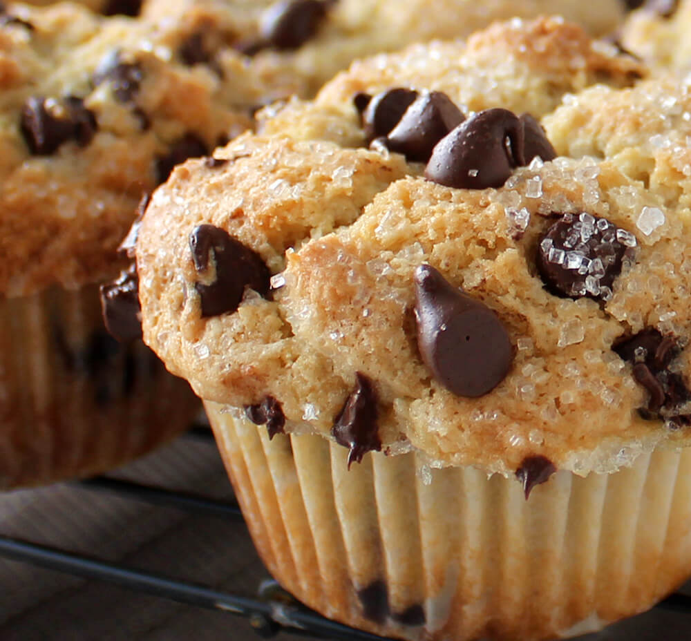

Chocolate Chip Muffin Recipe

Indulge in the ultimate comfort food with our mouthwatering chocolate chip muffins. These delightful treats are a perfect fusion of rich, velvety chocolate chips and tender, moist muffin batter. Whether you're starting your day with a sweet breakfast or craving a decadent snack, these chocolate chip muffins are sure to satisfy your sweet tooth and leave you wanting more.
Ingredients
- 2 cups all-purpose flour
- 2 tsp. baking powder
- 1/2 tsp. ground cinnamon
- 1/2 tsp. salt
- 2/3 cup light brown sugar
- 2/3 cup milk
- 2/3 cup vegetable oil
- 2 large eggs
- 2 tsp. vanilla extract
- 1 cup semisweet chocolate chips, try using Ghirardelli Grand Chips for larger chunks of chocolate flavor
Instructions
- Preheat oven to 425 degrees. Place rack in center of oven. Line standard muffin pan with paper liners. Set aside.
- In a large bowl, whisk together flour, baking powder, cinnamon and salt. Set aside.
- In a medium bowl, whisk together brown sugar, milk, vegetable oil, eggs and vanilla extract until well combined. Add wet ingredients to dry ingredients and mix until just combined and no flour streaks remain. Fold in the 3/4 cup of the chocolate chips.
- Divide batter evenly among muffin cups, filling each 3/4 full. Top batter with remaining 1/4 cup chocolate chips, a few in each cup. Bake for 5 minutes at 425 degrees, then reduce the oven temperature to 350 degrees. Bake for an additional 13 minutes or until a tester inserted in center comes out with just a crumb or two. Cool in pan for 10 minutes. Repeat with remaining batter and chips.
Enjoy!